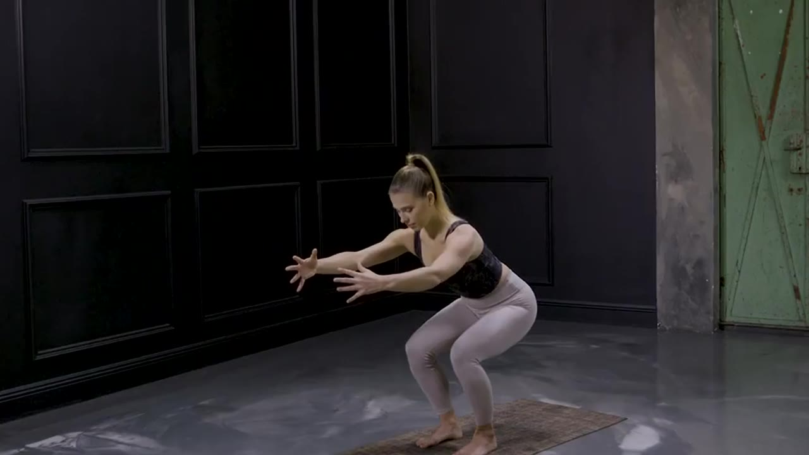
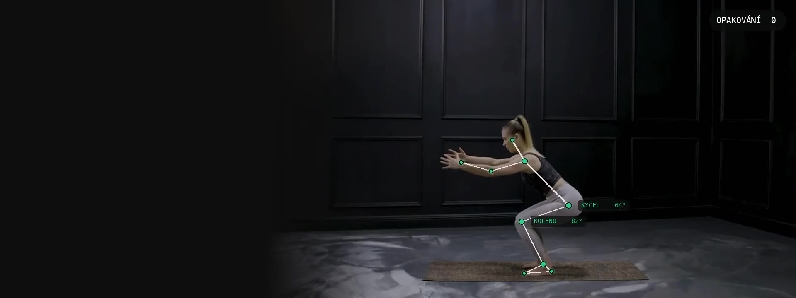
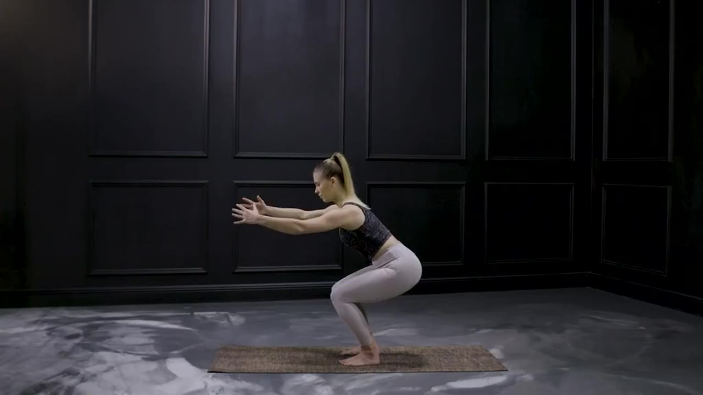
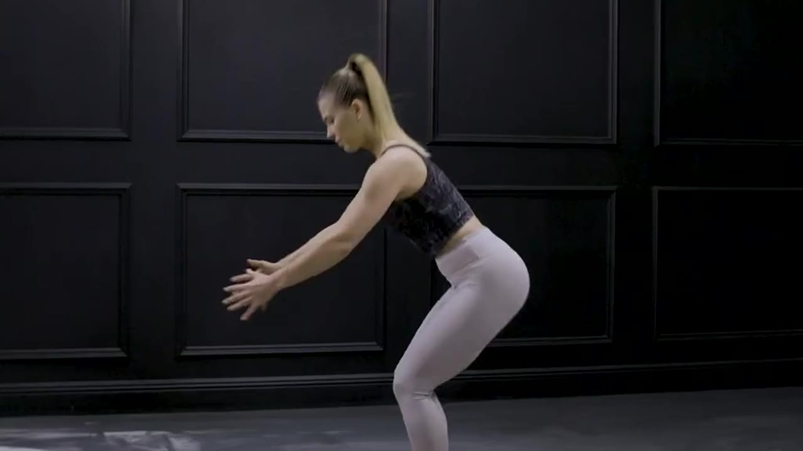

Šikmo zepředu, celí v záběru
Telefon postavte asi pod úhlem 45 stupňů. Uvidíte se na displeji a Fyzioscanner uvidí kolena i hlavu.

POHLED 45°
Fyzioscanner · cvičení pod dohledem fyzioterapeutky
Telefon sleduje 33 bodů vašeho těla a hlasem fyzioterapeutky Kinisi opraví techniku přímo během pohybu. Krátce, klidně, jen když je to potřeba.
Jak to funguje
Žádné senzory ani pásky na těle. Stačí telefon a prohlížeč, aplikaci nemusíte instalovat.
Telefon postavte asi pod úhlem 45 stupňů. Uvidíte se na displeji a Fyzioscanner uvidí kolena i hlavu.

POHLED 45°V rohu obrazovky běží vzor fyzioterapeutky. Sleduje váš pohyb a ukazuje přesně tu fázi, ve které právě jste.

Ano, takhle.KYČEL 64°Když chyba trvá, uslyšíte krátký pokyn ve slovech Kinisi. Když ji opravíte, Fyzioscanner to potvrdí.

Napřimte páteř.BEDRA +14°Co hlídá
Fyzioscanner porovnává váš pohyb se vzorem terapeutky ve stejné fázi cviku. Klepněte na bod a uvidíte, jak by vás opravil.
Odbornost
Za každým cvikem stojí fyzioterapeutky Kinisi, centrum fyzioterapie v Praze 5 a Praze 9. Popisy cviků, chyby i formulace korekcí jsou jejich, Fyzioscanner je jen přenáší k vám domů.
Každý cvik má vzor natočený terapeutkou. Pohyb se porovnává ve stejné fázi, třeba ve stejné hloubce podřepu.
Nejdřív to nejdůležitější pro daný cvik. Jen trvající chyba, žádné opravování každého záškubu.
Úhel krku vůči trupu se počítá v prostoru, takže funguje z boku i šikmo zepředu.
Dech, břišní stěnu nebo klenbu nohy kamera nezměří. Fyzioscanner je připomene, ale nikdy neřekne, že je děláte špatně.
„Vnímejte aktivní zapojení svalů dolních končetin a hýžďových svalů. Udržte aktivní trup a napřímení páteře.“
Pro fyzioterapeuty a kliniky
Sestavte pacientovi program, pošlete mu pozvánku přes QR kód a sledujte, jak se mu daří. Bez telefonování, bez dohadování.
Kdo necvičí, komu roste bolest, kdo opakuje stejnou chybu. Na jedné obrazovce.
Cviky z knihovny, opakování, série, pauzy, jak často a jak přísně. Pacientovi se načte sama.
Se souhlasem pacienta si přehrajete cvičení i s vyznačenými chybami a časovou osou pokynů.
Skóre, rozsah pohybu a bolest v grafech. Automatický souhrn před kontrolou v ordinaci.
Přístup
Fyzioscanner právě pouštíme mezi první pacienty a terapeuty. Zanechte kontakt a ozveme se s podmínkami jako první.
Cena: zveřejníme brzy
Chci cvičitCena: zveřejníme brzy
Chci pro svou praxiNa míru
Domluvit ukázkuBuďte u toho první
Napište nám, kdo jste. Pošleme podmínky přístupu a pozvánku do aplikace. Žádný newsletter navíc.
Časté otázky
Ne. Je to pomůcka pro domácí cvičení. Cviky a sestavu určuje terapeut, Fyzioscanner hlídá techniku, když u vás terapeut zrovna není. Nestanovuje diagnózu ani neléčí.
Telefon s kamerou (iPhone se Safari nebo Android s Chromem) a stojánek nebo opěrku. Aplikace běží v prohlížeči, nic se neinstaluje.
Rozpoznávání pohybu běží přímo v telefonu. Video se nikam neposílá. Terapeutovi odejde jen tehdy, když to sami povolíte, a uloží se v zabezpečeném úložišti v EU.
Teď dřep a dynamický podřep. Postupně přibývají cviky z knihovny Kinisi, která má přes 230 popsaných cviků.
Doporučujeme šikmo zepředu, asi pod úhlem 45 stupňů: vidíte se na displeji a Fyzioscanner vidí kolena i hlavu. Některé kontroly zad fungují jen z boku, cvik vám řekne, jak telefon postavit.